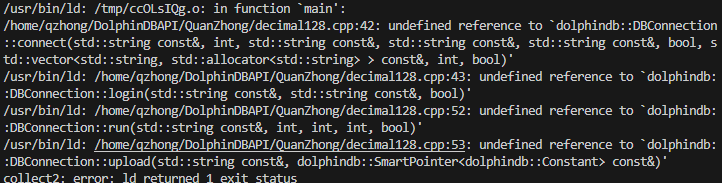
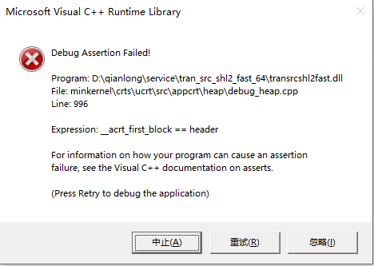

故障排查
常见问题
以下为使用 DolphinDB C++ API 时的常见问题及解决方法。
| 问题 | 原因 | 解决方法 |
|---|---|---|
| 编译时出现报错 "undefined reference to 'uuid_generate'" | 未安装 libuuid-devel 库或者未添加 -luuid 参数 |
|
| 使用 Visual Studio 2022 编译 C++应用时报”无法解析的外部符号“错误 | 在编译 C++应用时添加了预定义宏 _DDBAPIDLL | 去掉该预定义宏 |
| 在 Linux 环境下，编译 C++应用时报 ”undefined reference to
dolphindb::DBConnection::connect(…)” 错误  |
在编译 C++应用时和编译 C++ API 动态库时，宏 _GLIBCXX_USE_CXX11_ABI 的值没有统一 | 重新编译 C++ API 或者重新编译 C++应用即可，注意该宏的值需要一致 |
| 在 Linux 环境下，运行 C++应用时报错，无法找到 libDolphinDBAPI.so 或者 libssl.so 动态库等 | 在运行时无法找到相关动态库 |
|
| 在 Visual Studio 中运行时抛出如下异常：  |
|
根据不同的可能原因，相应调整 |
运行时异常处理
如果在连接数据库时没有开启自动重连，那么在出现网络问题等异常时，C++ API 会抛出 dolphindb::IOException、dolphindb::RuntimeException 等异常，在 C++应用程序中需要注意捕获，否则会导致进程中止。
下面是一些常见的发生异常的场景：
| 错误代码 | 错误描述 |
|---|---|
| IO Error 1 | TCP 连接已断开 |
| IO Error 2 | 在非阻塞套接字模式下，暂时没有数据可供接收 |
| IO Error 3 | 在非阻塞套接字模式下，发送缓冲区已满 |
| IO Error 4 | String 类型的数据超过了256k |
| IO Error 5 | 在非阻塞套接字模式下，TCP 连接正在建立过程中 |
| IO Error 6 | 非法的数据格式 |
| IO Error 7 | 到达了文件或者缓冲区的末尾 |
| IO Error 13 | 其它 IO 错误 |